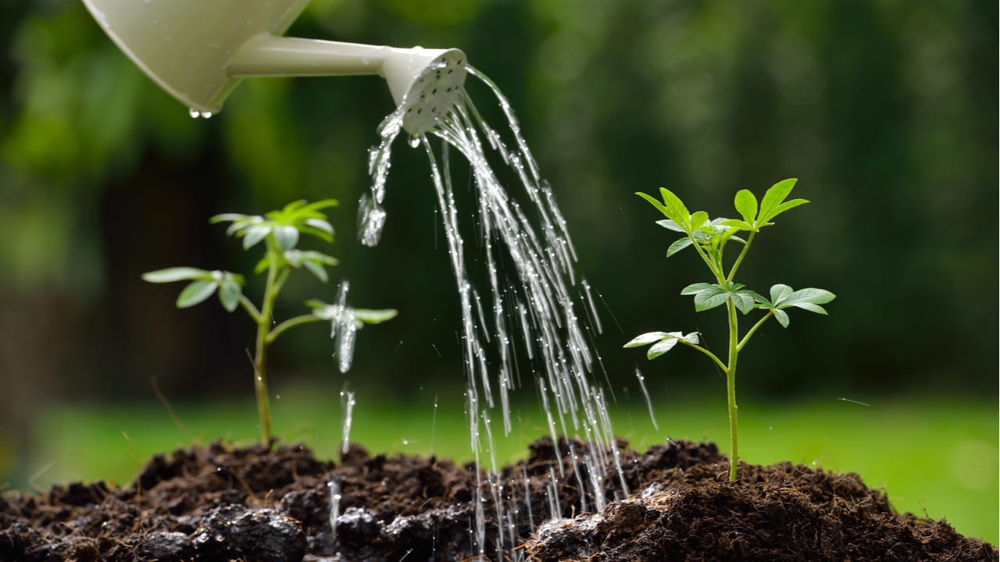
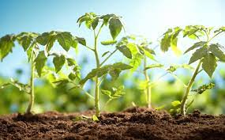
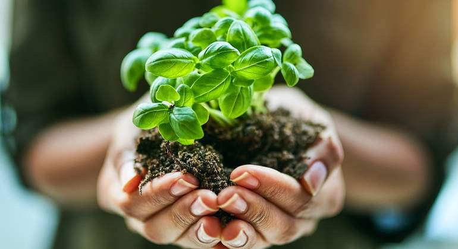

<div id="carouselExampleInterval" class="carousel slide" data-ride="carousel">
    <div class="carousel-inner">
      <div class="carousel-item active" data-interval="10000">
        
      </div>
      <div class="carousel-item" data-interval="2000">
        
      </div>
      <div class="carousel-item">
        
      </div>
      <div class="carousel-item">
        
      </div>
    </div>
    <a class="carousel-control-prev" href="#carouselExampleInterval" role="button" data-slide="prev">
      <span class="carousel-control-prev-icon" aria-hidden="true"></span>
      <span class="sr-only">Previous</span>
    </a>
    <a class="carousel-control-next" href="#carouselExampleInterval" role="button" data-slide="next">
      <span class="carouse l-control-next-icon" aria-hidden="true"></span>
      <span class="sr-only">Next</span>
    </a>
  </div>
  <div>
      <span>El crecimiento de las plantas es delicado es por eso que se presenta el proceso del crecimiento de tu hermosa planta.
        Nota del desarrollador: Veras a tu planta como bebe y después como adulta. ¿No es eso hermoso?</span>
  </div>
